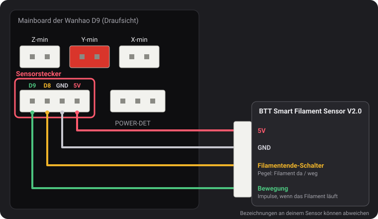
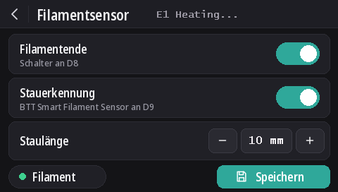

Filamentsensoren
Ab v2.0.5 lesen diese Firmwares zwei Arten von Sensoren: Wanhaos Filamentende-Schalter und den BTT Smart Filament Sensor V2.0, der auch bemerkt, wenn sich das Filament nicht mehr bewegt (verhedderte Spule, Stau, abgeschliffenes Filament). Die Filamentende-Erkennung ist bei jedem Modell standardmäßig aktiv, die Stauerkennung ist aus.
Der Sensorstecker

Der 4-polige Stecker links von POWER-DET, unterhalb der Endschalter-Stecker, führt D9, D8, GND und 5V, in dieser Reihenfolge. Die Pin-Namen stammen aus einem Anschlussplan von Wanhao, den dustovich gefunden und auf dem Discord geteilt hat; auf der Rückseite des Boards sind dieselben vier Pins als CTRL, BTN, GND und VCC beschriftet.
- D8 ist der Filamentende-Eingang, den Wanhaos eigene Firmware liest.
- D9 wird von Wanhaos Firmware nicht genutzt: Diese Builds lesen dort das Bewegungssignal des BTT-Sensors.
Am Display
Mit DGUS Reloaded 2.0 auf dem Display (Firmware v2.0.9 oder neuer): Einstellungen → Filament → Filamentsensor.
- Filamentende schaltet die gesamte Erkennung ein oder aus, wie
M412 S1/M412 S0. - Stauerkennung schaltet die Stauerkennung mit der darunter eingestellten Länge ein oder aus (
L0). - Staulänge: − und + ändern sie um 1 mm; die Zahl antippen, um sie einzutippen.
- Der Punkt Filament ist grün, solange der Filamentende-Schalter Filament erkennt, und rot, wenn nicht.
- Änderungen wirken sofort. Speichern speichert sie dauerhaft, wie
M500. Der Zurück-Pfeil verlässt die Seite ohne zu speichern: Beim nächsten Start gelten wieder die gespeicherten Einstellungen.

Die M412-Befehle
Alles wird per USB über ein serielles Terminal eingestellt (Pronterface, das Terminal deines Slicers oder von OctoPrint,
250000 Baud). Parameter lassen sich in einem Befehl kombinieren, zum Beispiel M412 S1 L10.
| Befehl | Was er bewirkt |
|---|---|
M412 | Zeigt den Status an, zum Beispiel Filament runout ON ; Distance 5.00mm ; Motion distance 0.00mm. |
M412 S1 | Schaltet die Erkennung ein: den Filamentende-Schalter und, wenn die Staulänge nicht 0 ist, auch die Stauerkennung. |
M412 S0 | Schaltet die gesamte Erkennung aus, Schalter und Stau. |
M412 D5 | Sobald der Schalter kein Filament mehr erkennt, wird noch 5 mm weitergedruckt, bevor pausiert wird, um das Filament zwischen Sensor und Düse aufzubrauchen. Standard 5 mm. |
M412 L10 | Schaltet die Stauerkennung ein (nur BTT-Sensor): pausiert, wenn 10 mm Filament durch den Extruder gehen, ohne dass sich das Rad des Sensors dreht. |
M412 L0 | Schaltet die Stauerkennung aus und lässt den Filamentende-Schalter, wie er ist. Das ist die Standardeinstellung. |
M500 | Speichert die Einstellungen. Ohne diesen Befehl geht eine Änderung beim Ausschalten des Druckers verloren. |
M119 | Die Zeile filament zeigt TRIGGERED mit eingelegtem Filament, open ohne. |
M412 L0 und L allein stammen aus unserer Änderung an Marlin
(MarlinFirmware/Marlin#28585), die in diese Firmwares eingebaut ist. In Marlin ohne sie wird L
allein ignoriert, und L0 pausiert den Druck sofort wegen eines Staus.
Wanhaos Filamentende-Schalter
Er meldet der Firmware, ob Filament vorhanden ist. Fehlt es, pausiert der Druck nach weiteren 5 mm Filament, und das Display startet einen Filamentwechsel.
Er ist seit v2.0.8 bei jedem Modell standardmäßig aktiv. Ist an D8 nichts angeschlossen, hält der Pull-up-Widerstand des Boards den Pin auf 5 V, was als „Filament vorhanden“ gelesen wird: Die Erkennung löst dann nie aus, sie kann also aktiv bleiben, ob ein Sensor verbaut ist oder nicht. Schließt man einen Filamentende-Schalter an D8 an, funktioniert er sofort.
- Die Stauerkennung bleibt aus (
L0): Dieser Schalter kann nicht sehen, ob sich das Filament bewegt. - Um den Schalter abzuschalten:
M412 S0, dannM500. - Von einem früheren Release gespeicherte Einstellungen behalten ihren Ein/Aus-Zustand. Zum Einschalten:
M412 S1, dannM500, oder auf die Standardwerte zurücksetzen (M502, dannM500, was auch den Z-Offset deines Sensors und das Mesh löscht).
BTT Smart Filament Sensor V2.0
Dieser Sensor hat zwei Ausgänge, und die Firmware liest sie unterschiedlich:
- Der Filamentende-Schalter (an D8) liefert einen Pegel: 5 V, solange Filament da ist, 0 V, sobald es weg ist.
- Der Bewegungsausgang (an D9) kommt von einem kleinen Rad, das das durchlaufende Filament dreht. Alle paar Millimeter Filament wechselt der Ausgang zwischen 0 V und 5 V. Die Firmware achtet nur auf diese Wechsel: Schiebt der Extruder die Staulänge an Filament durch, ohne dass ein einziger kommt, folgt das Filament nicht (verhedderte Spule, Stau, abgeschliffenes Filament), und der Druck pausiert. Der Filamentende-Schalter kann das nicht erkennen: Bei einem Stau ist das Filament ja noch da.
Verkabelung
5V an 5V, GND an GND, das Signal des Filamentende-Schalters an D8 und das Bewegungssignal an D9. Die Bezeichnungen am Kabel des Sensors können abweichen.
Einschalten
M412 S1 L10
M500Pausieren Drucke ohne Grund, erhöhe die Staulänge: M412 L15, dann M500. Um nur den
Filamentende-Schalter zu behalten: M412 L0, dann M500.
Prüfen
M412: Filament runout ON ; Distance 5.00mm ; Motion distance 10.00mm.M119mit eingelegtem Filament: filament: TRIGGERED. Ändert sich diese Zeile, wenn du Filament von Hand durchschiebst, statt beim Einlegen oder Herausziehen, sind die beiden Signalleitungen vertauscht: D8 und D9 tauschen.
L0 nie),
aber noch nicht mit dem BTT-Sensor selbst. Wird der Schalter falsch herum gelesen (open mit eingelegtem
Filament), sag uns auf Discord Bescheid.Update von v2.0.5 oder v2.0.6
Diese Releases konnten die Stauerkennung nicht abschalten und nutzten daher eine Staulänge, die nie erreicht werden sollte: 100 m in
v2.0.5 (tatsächlich zu kurz: etwa ein Drittel einer 1-kg-Spule, danach konnte ein eingeschaltet gelassener Drucker grundlos pausieren) und
10 km in v2.0.6. Beim Start des Druckers lädt v2.0.7 diese beiden Werte als L0. Eine echte Länge, die du
für einen BTT-Sensor eingestellt hast, etwa L10, bleibt erhalten. Von v2.0.4 oder älter wird die Filamentende-Distanz
von 5 mm geladen statt der 0, die diese Versionen gespeichert haben.